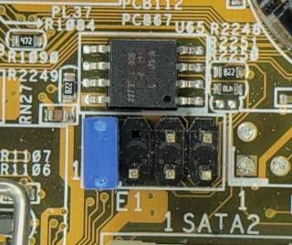

Flashing firmware standalone
If none of the other methods work, there are three possibilities:
Desolder
You must remove or desolder the flash IC before you can flash it. It’s recommended to solder a socket in place of the flash IC.
When flashing the IC, always connect all input pins. If in doubt, pull /WP, /HOLD, /RESET and alike up towards Vcc.
SPI flash emulator
If you are a developer, you might want to use an EM100Pro instead, which sets the onboard flash on hold, and allows to run custom firmware. It provides a very fast development cycle without actually writing to flash.
SPI flash overwrite
It is possible to set the onboard flash on hold and use another flash chip. Connect all lines one-to-one, except /HOLD. Pull /HOLD of the soldered flash IC low, and /HOLD of your replacement flash IC high.
SPI header
Some boards feature a pin header which is connected to the SPI bus. This can also be used to connect a secondary flash chip.
HP boards
Many HP desktop mainboards have a 2x8 or 2x10 block of header pins which can be used to connect a second flash chip. One pin is connected to the onboard flash’s /CS pin, and another is connected to the chipset’s /CS pin. Normally a jumper cap is placed between these pins, allowing the chipset to access the onboard flash. To use this header, remove this jumper and connect all lines except /CS one-to-one with the corresponding pin on the header. The secondary flash chip’s /CS line should be connected to the chipset /CS pin on the header. By doing this the secondary SPI flash, rather than the onboard flash, will respond to accesses from the chipset.

Note that on boards where this header is unpopulated, a jumper resistor will be populated nearby which serves the purpose of the jumper cap. One end should have continuity with the /CS pin on the flash, and the other end should have continuity with the chipset /CS pin on the unpopulated header. It may also be possible to find this resistor through visual inspection of the traces on the /CS pins. This resistor should be desoldered if you wish to solder a pin header to the board and connect a secondary flash, otherwise the onboard flash will always respond to accesses.
Other boards
Other boards may have similar headers, but will likely use a different pinout than the ones explicitly mentioned here. Usually such a header will be located near the onboard SPI flash. If schematics are available, the pinout for the header will likely be found in it, but it could also be determined using a multimeter in continuity mode to map out the connections between the SPI flash and the header.